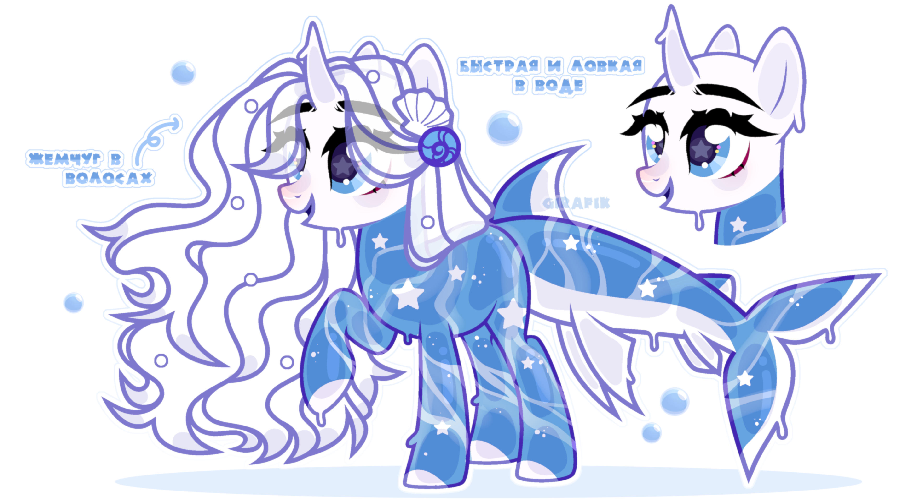
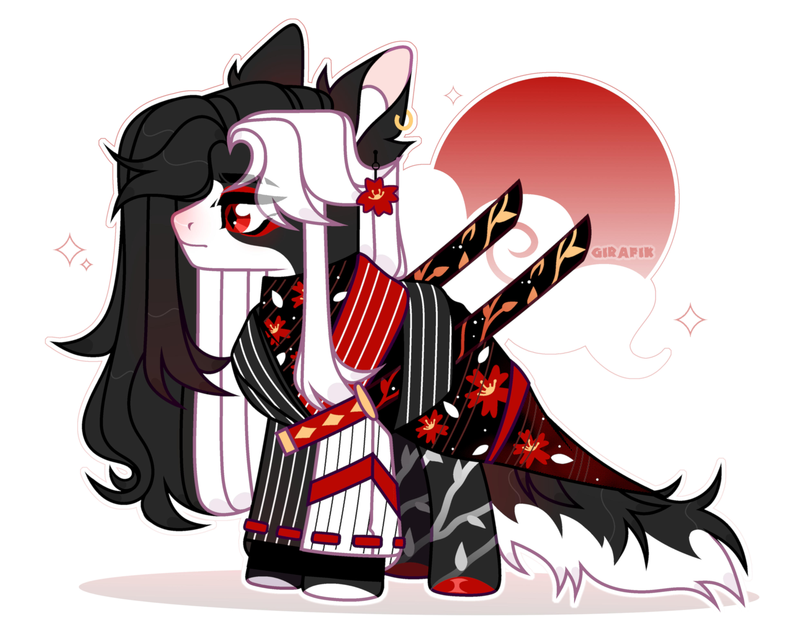
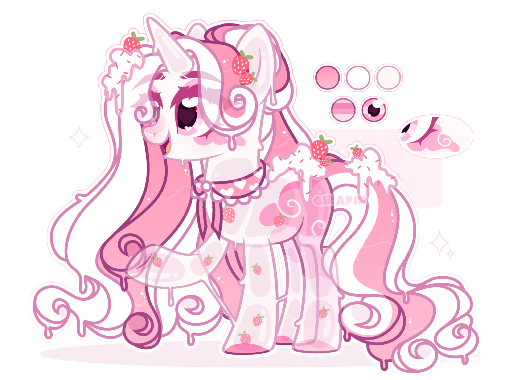
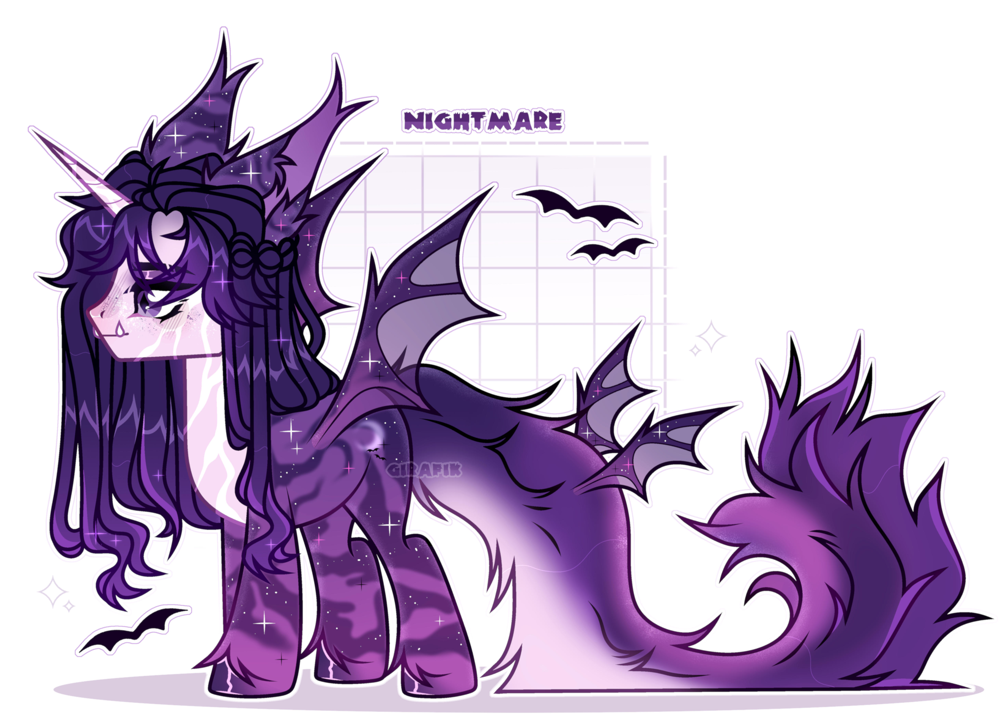
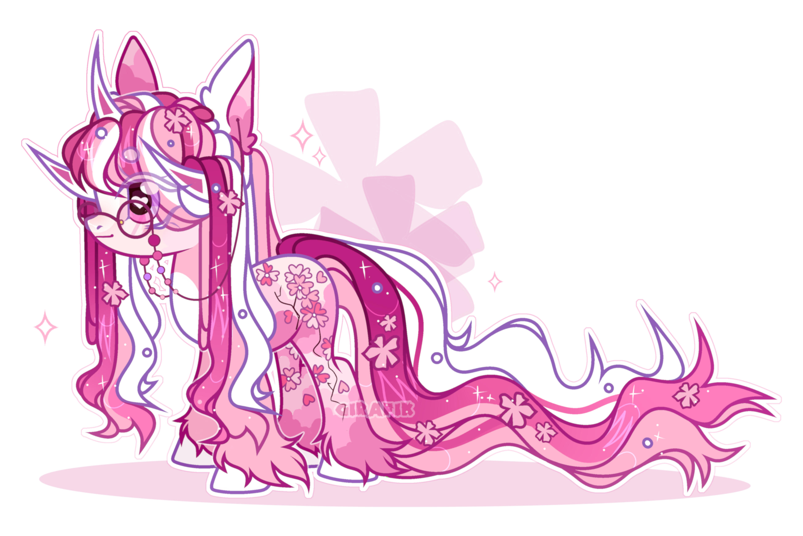
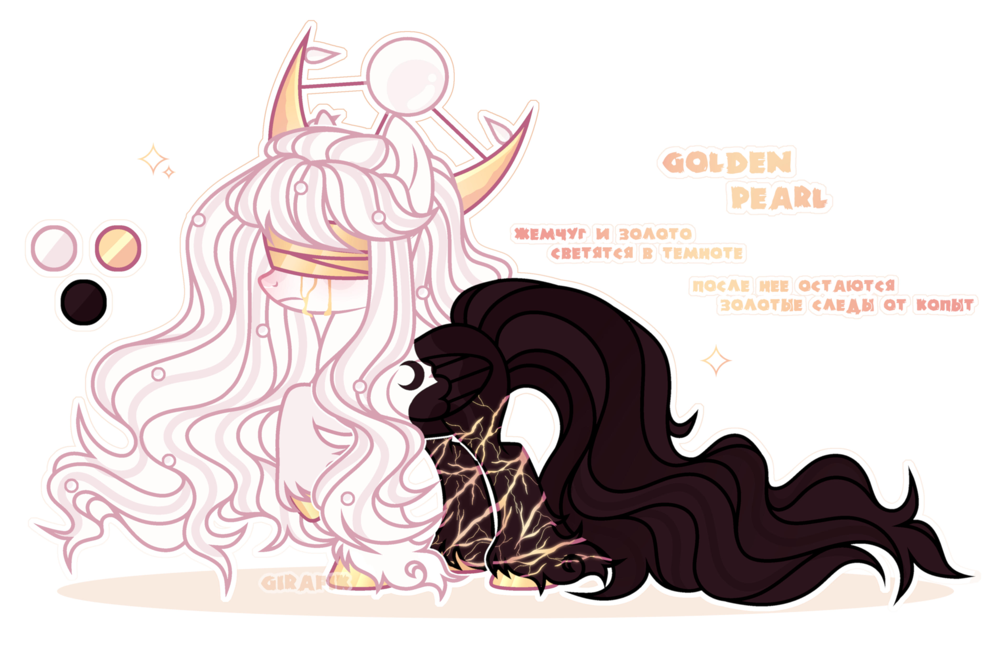

Ynishella (or Girafik)
Artist, Designer
Welcome to my creative corner! I am a young artist specializing in creating characters of any style: from raster graphics to vector images. Ready to revive your ideas for animation, games and more
Selected Works
2022 -> 2023

The adopt is made in the theme of 'Slimo-pony'. I was inspired by the sea, I considered a lot of references. The colors are simple, but everything looks so harmonious. For a while, this trend on the 'Slimo-pony' was popular

I was inspired by Japan when creating this charming boy. It was also an adept, I decided to try myself in something new and I really liked it. I spent a lot of time on it, but it was worth it

This was my first custom custom. The customer was very nice, she sent me a description of what I would like to see and some pictures in the form of references. This character was a birthday present for her. It was nice to make a sweet girl in soft colors. The customer was insanely satisfied with the work.

The idea for this adopt came quite spontaneously. A night vampire, mesmerizes with its appearance alone and how I tried over its spots to make them as unusual and similar to the night sky as possible

A recent work and I was inspired by Japanese sakura. I have always liked the pink shades in the Adopts and in this case they are perfectly combined with each other. A pretty detailed and gentle girl
